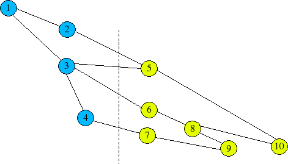

map2slim
map2slim
Given a GO slim file, and a current ontology (in one or more files),
this script will map a gene association file (containing annotations
to the full GO) to the terms in the GO slim.
The script can be used to either create a new gene association file,
containing the most pertinent GO slim accessions, or in count-mode, in
which case it will give distinct gene product counts for each slim
term
USAGE
map2slim.pl generic.0208 ontology/* gene-associations/gene_association.fb
The first argument is the slim ontology file; the next arguments are the full ontology file or files; the last is the gene association file to be mapped.
ARGUMENTS
-b <bucket slim file>
This argument adds “bucket terms” to the slim ontology – see the next section for an explanation. The new slim ontology file, including bucket terms will be written to <bucket slim file>
-outmap <slim mapping file>
This will generate a mapping file for every term in the full ontology showing both the most pertinent slim term and all slim terms that are ancestors. If you use this option, do NOT supply a gene-associations file
-c
This will force map2slim to give counts of the assoc file, rather than map it
-o <out file>
This will write the mapped assocs (or counts) to the specified file, rather than to the screen
MAPPING ALGORITHM
GO is a DAG, not a tree. This means that there is often more than one
path from a GO term up to the root Gene_Ontology node.

A
hypothetical example – blue circles show terms in the GO slim,
and yellow circles show terms in the full ontology. The full ontology
subsumes the slim, so the blue terms are also in the ontology.
|
GO ID |
MAPS TO SLIM ID |
ALL SLIM ANCESTORS |
|---|---|---|
|
5 |
2+3 |
2,3,1 |
|
6 |
3 only |
3,1 |
|
7 |
4 only |
4,3,1 |
|
8 |
3 only |
3,1 |
|
9 |
4 only |
4,3,1 |
|
10 |
2+3 |
2,3,1 |
The 2nd column shows the most pertinent ID(s) in the slim – the direct mapping. The 3rd column shows all ancestors in the slim.
Note in particular the mapping of ID 9 – although this has two paths to the root through the slim via 3 and 4, 3 is discarded because it is subsumed by 4.
On the other hand, 10 maps to both 2 and 3 because these are both the first slim ID in the two valid paths to the root, and neither subsumes the other.
The algorithm used is:
to map any one term in the full ontology:
find all valid paths through to the root node in the full ontology
for each path, take the first slim term encountered in the path
discard any redundant slim terms in this set – ie slim terms subsumed by other slim terms in the set
BUCKET TERMS
If you run the script with the -b option, bucket terms will be added. For any term P in the slim, if P has at least one child C, a bucket term P' will be created under P. This is a catch-all term for mapping any term in the full ontology that is a descendant of P, but NOT a descendant of any child of P in the slim ontology.
For example, the slim generic.0208 has the following terms and structure:
%DNA binding ; GO:0003677
%chromatin binding ; GO:0003682
%transcription factor activity ; GO:0003700, GO:0000130
After adding bucket terms, it will look like this:
%DNA binding ; GO:0003677
%chromatin binding ; GO:0003682
%transcription factor activity ; GO:0003700 ; synonym:GO:0000130
@bucket:Z-OTHER-DNA binding ; slim_temp_id:12
Terms from the full ontology that are other children of DNA binding, such as single-stranded DNA binding and its descendents will map to the bucket term.
The bucket term has a “slim ID” which is transient and is there only to facilitate the mapping. It should not be used externally.
The bucket term has the prefix “Z-OTHER”; the “Z” is a hack to make sure that the term is always listed last in the alphabetic ordering.
The algorithm is slightly modified if bucket terms are used. The bucket term has an implicit relationship to all OTHER siblings not in the slim.
GRAPH MISMATCHES
Currently map2slim does not flag graph mismatches; it takes the full ontology as being the real graph.
OUTPUT
In normal mode, a standard format gene-association file will be written. The GO ID column (5) will contain GO slim IDs. The mapping corresponds to the 2nd column in the table above. Note that the output file may contain more lines that the input file. This is because some full GO IDs have more than one pertinent slim ID.
COUNT MODE
map2slim can be run with the -c option, which will gives the counts of distinct gene products mapped to each slim term. There are actually two counts for every slim term – the number of distinct gene products for which this is the most pertinent/direct slim ID, and the number of distinct gene products which are annotated to any descendant of this slim ID (or annotated directly to the slim ID). This corresponds to the 2nd and 3rd columns in the table above.